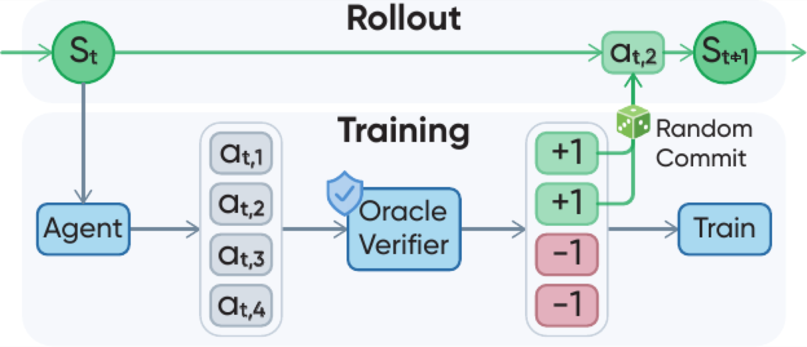

Search-based
Sokoban. Breadth-first search identifies actions that lie on a shortest solution path.

Outcome rewards supervise completed trajectories; rollout-based process rewards estimate intermediate values from additional continuations; VPR directly scores intermediate actions with a task-solving oracle.
Reinforcement learning from verifiable rewards can optimize objective task outcomes, but terminal-only feedback leaves a substantial credit-assignment problem in long-horizon interaction. Learned judges may be noisy or exploitable, while continuation-based value estimates require additional rollouts from intermediate states.
VPR studies structured agentic reasoning problems that admit symbolic or algorithmic task-solving oracles. It repurposes each oracle as an action-level process verifier: oracle-preferred actions receive the highest reward, while other legal or invalid policy actions receive lower rewards.
A task-solving procedure becomes a reward function over policy actions.
Best-of-K commit steers trajectories toward promising successor states.
Same-state candidates define relative advantages for policy optimization.

Three VPR instantiations, in visual order: search-based Sokoban, constraint-based Sudoku, and posterior-based Minesweeper.
Sokoban. Breadth-first search identifies actions that lie on a shortest solution path.
Sudoku. Constraint structure distinguishes forced, MRV, legal non-oracle, wrong, and invalid moves.
Minesweeper. Posterior mine probabilities identify safe reveals, certain flags, and minimum-risk guesses.
At each visited state, the policy independently samples four candidate responses. The constructed verifier scores and ranks their parsed actions, and one uniformly sampled maximum-reward candidate is committed to the environment. The next state group begins from that selected successor.
Every informative, non-padding candidate can train the policy. VPR first centers rewards within a state group and then whitens across valid candidates. Equal-reward groups are skipped because they contain no local preference signal.

Best-of-four commit improves exploration of promising states, while inducing an oracle-guided shift in the visited-state distribution. Four candidates provide a practical balance between exploration and selection pressure.
In controlled Qwen3-4B experiments, VPR outperforms GRPO and VinePPO on every reported metric across Sokoban, Sudoku, and Minesweeper. Mixed OOD experiments start from the same Qwen3-4B-Base checkpoint and hold math-data exposure fixed: Math+VPR achieves the best average over seven general-reasoning benchmarks and the strongest ALFWorld and WebShop results. The comparison does not claim equal total rollout compute.
Compared with 12.2 for GRPO.
Compared with 29.0 for GRPO.
Compared with 4.2 for GRPO.
Obtained by Math+VPR over seven reasoning benchmarks.
| Method | Sokoban | Sudoku | Minesweeper | ||
|---|---|---|---|---|---|
| SR | SR | CR | SR | CR | |
| Optimal | 100.00 ± 0.00 | 100.00 ± 0.00 | 100.00 ± 0.00 | 78.60 ± 3.78 | 96.93 ± 0.77 |
| Base | 5.20 ± 3.35 | 0.00 ± 0.00 | 4.10 ± 0.39 | 0.20 ± 0.45 | 71.04 ± 2.00 |
| GRPO | 12.20 ± 1.10 | 29.00 ± 3.46 | 39.03 ± 3.44 | 4.20 ± 1.30 | 73.49 ± 2.04 |
| VinePPO | 6.80 ± 1.30 | 0.00 ± 0.00 | 2.90 ± 0.44 | 3.00 ± 2.24 | 72.75 ± 1.59 |
| VPR | 28.40 ± 2.79 | 80.60 ± 4.16 | 84.22 ± 3.15 | 32.60 ± 5.03 | 85.76 ± 0.98 |
SR denotes success rate; CR denotes completion rate. Results are mean ± sample standard deviation over five runs of 100 games. Optimal directly executes the task oracle under the same environments and action budgets. Minesweeper still requires minimum-risk guesses in uncertain states.
| Training | GSM8K avg@3 | MATH-500 avg@5 | AIME24 avg@32 | AIME25 avg@32 | GPQA-D avg@5 | BBH avg@1 | MMLU-Pro avg@1 | Avg. |
|---|---|---|---|---|---|---|---|---|
| Base | 83.70 | 67.20 | 9.48 | 7.19 | 6.97 | 14.71 | 17.01 | 29.47 |
| Math | 91.38 | 78.88 | 19.06 | 19.38 | 35.45 | 43.65 | 57.60 | 49.34 |
| Math+GRPO | 91.89 | 81.20 | 17.71 | 17.19 | 38.08 | 54.23 | 58.91 | 51.32 |
| Math+VPR | 92.47 | 81.36 | 22.50 | 19.69 | 38.18 | 58.07 | 56.95 | 52.75 |
Zero-shot avg@k performance, with k shown under each benchmark. Math+VPR demonstrates the strongest overall performance.
| Training | ALFWorld SR | WebShop score | WebShop SR |
|---|---|---|---|
| Base | 1.34 ± 1.86 | 8.33 ± 6.23 | 0.93 ± 0.81 |
| Math | 11.64 ± 2.40 | 21.79 ± 1.70 | 0.47 ± 0.12 |
| Math+GRPO | 11.04 ± 1.70 | 32.76 ± 2.68 | 0.60 ± 0.20 |
| Math+VPR | 16.12 ± 2.87 | 42.01 ± 2.14 | 1.33 ± 0.76 |
Math+VPR improves observed progress, especially WebShop partial-credit score; low absolute success rates remain an important limitation.
On Sokoban, vanilla-rollout VPR reaches 22.60 ± 4.77 SR, while state-group VPR reaches 28.40 ± 2.79. This comparison changes candidate collection, commit behavior, state visitation, and local normalization together; it supports their combined benefit rather than isolating a single credit-assignment factor.
With 20% and 40% oracle reward corruption, Sokoban SR is 14.60 ± 3.58 and 16.80 ± 3.42, respectively. Both remain above Base but below uncorrupted VPR. The non-monotonic pair cautions against stronger claims about a smooth degradation law.
The illustrative Minesweeper trajectory makes the local comparison concrete. Terminal-derived trajectory rewards can reinforce or penalize a completed rollout, but they do not identify which action inside it caused the outcome. VPR instead compares candidates from the same state. When their oracle rewards differ, a risky reveal receives lower relative advantage than an oracle-preferred flag or reveal.
This example does not establish causality by itself; it illustrates a plausible mechanism consistent with the observed success- and completion-rate gains.

When a compact symbolic oracle is unavailable, we explore whether a task-grounded expert reference policy can supply VPR-style action rewards at student-visited states. The reference policy receives privileged task specifications, evaluation criteria, and reference-resolution guidance. Tool actions use canonical exact matching; natural-language actions use a semantic matcher. The expert is used only during training.
| Method | Airline train | Airline test | Retail train | Retail test | Telecom OOD |
|---|---|---|---|---|---|
| Qwen3-8B (no RL) | 42.0 / 18.5 | 26.1 / 13.0 | 47.0 / 24.6 | 41.5 / 20.8 | 20.2 / 7.0 |
| GRPO | 48.1 / 14.8 | 34.8 / 17.4 | 56.3 / 32.8 | 43.4 / 28.3 | 13.5 / 0.0 |
| VPR with expert | 54.3 / 37.0 | 46.4 / 30.4 | 67.8 / 47.5 | 55.3 / 32.1 | 22.5 / 4.4 |
Each cell reports pass1/pass3: mean success over individual trials and the fraction of tasks solved in all three trials. Unlike pass@3, pass3 requires three successes rather than at least one.
@misc{yuan2026verifiable,
title={Verifiable Process Rewards for Agentic Reasoning},
author={Huining Yuan and Zelai Xu and Huaijie Wang and Xiangmin Yi and Jiaxuan Gao and Xiao-Ping Zhang and Yu Wang and Chao Yu and Yi Wu},
year={2026},
eprint={2605.10325},
archivePrefix={arXiv},
primaryClass={cs.AI},
url={https://arxiv.org/abs/2605.10325}
}